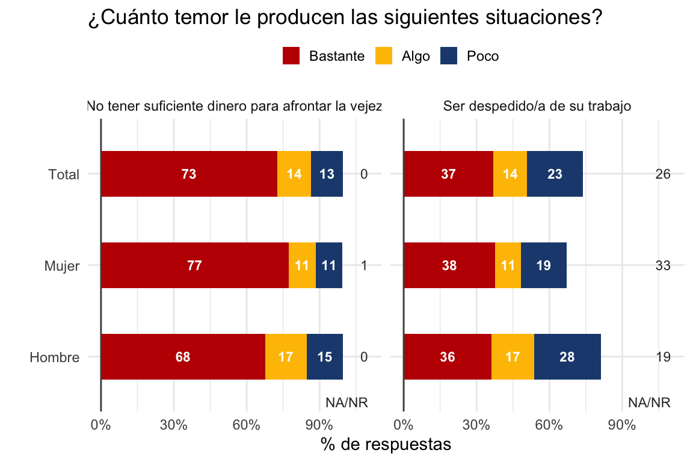

Funciones y datos auxiliares para análisis de encuestas sociales utilizados por la Dirección de Estudios Sociales UC (DESUC).
Instalación
Para instalar la versión en desarrollo de desuctools desde GitHub puedes utilizar el siguiente código:
# install.packages("devtools")
devtools::install_github("desuc/desuctools")Ejemplos
Datos de región y comuna
Base de datos con información sobre regiones y comunas.
# Tabla con comunas capitales regionales.
desuctools::regiones_y_comunas %>%
filter(region_capital) %>%
arrange(region_orden) %>%
select(region, comuna, comuna_nom) %>%
desuctools::kable_desuc(align = 'rrl', font_size = 9)
#> Warning in kableExtra::kable_styling(., latex_options = latex_options,
#> repeat_header_text = "(continuación)", : Please specify format in kable.
#> kableExtra can customize either HTML or LaTeX outputs. See https://
#> haozhu233.github.io/kableExtra/ for details.| region | comuna | comuna_nom |
|---|---|---|
| 15 | 15.101 | Arica |
| 1 | 1.101 | Iquique |
| 2 | 2.101 | Antofagasta |
| 3 | 3.101 | Copiapó |
| 4 | 4.101 | La Serena |
| 5 | 5.101 | Valparaíso |
| 6 | 6.101 | Rancagua |
| 7 | 7.101 | Talca |
| 16 | 8.401 | Chillán |
| 8 | 8.101 | Concepción |
| 9 | 9.101 | Temuco |
| 14 | 14.101 | Valdivia |
| 10 | 10.101 | Puerto Montt |
| 11 | 11.101 | Coyhaique |
| 12 | 12.101 | Punta Arenas |
Recodificación de variables
# Cargar base de encuesta Bicentenario
file <- tempfile()
download.file(url = 'https://github.com/DESUC/30diasdegraficos/raw/master/inputs/12-lollipop-df_bicen_19_30diasdegraficos_2020.rds',
destfile = file)
data <- readRDS(file)
head(data)
#> # A tibble: 6 x 15
#> folio d07 t01_1 t01_2 t01_3 t02_1 t02_2 t03_1 t03_2 t03_3
#> <dbl> <dbl+l> <dbl+l> <dbl+l> <dbl+l> <dbl+l> <dbl+l> <dbl+l> <dbl+l> <dbl+l>
#> 1 100101 2 [Muj… 2 [Bas… 6 [No … 1 [Muc… 2 [Bas… 3 [Alg… 1 [Muc… 1 [Muc… 1 [Muc…
#> 2 100102 2 [Muj… 1 [Muc… 1 [Muc… 1 [Muc… 3 [Alg… 5 [Nad… 1 [Muc… 1 [Muc… 1 [Muc…
#> 3 100103 1 [Hom… 1 [Muc… 2 [Bas… 1 [Muc… 1 [Muc… 1 [Muc… 1 [Muc… 5 [Nad… 2 [Bas…
#> 4 100104 2 [Muj… 1 [Muc… 1 [Muc… 1 [Muc… 4 [Poc… 4 [Poc… 4 [Poc… 4 [Poc… 3 [Alg…
#> 5 100105 2 [Muj… 1 [Muc… 2 [Bas… 1 [Muc… 5 [Nad… 3 [Alg… 4 [Poc… 1 [Muc… 2 [Bas…
#> 6 100106 2 [Muj… 1 [Muc… 1 [Muc… 1 [Muc… 1 [Muc… 5 [Nad… 1 [Muc… 4 [Poc… 4 [Poc…
#> # … with 5 more variables: t03_4 <dbl+lbl>, t04_1 <dbl+lbl>, t04_2 <dbl+lbl>,
#> # t04_3 <dbl+lbl>, pond_se <dbl>La función desuctools::rec_cat_5a3 recodifica preguntas likert de 5 a 3 categorías, entregando la opción de agregar etiquetas a ellas.
data <- data %>%
mutate(across(c(t01_1:t01_2),
~desuctools::rec_cat_5a3(., labels = c('Bastante' = 1,
'Algo' = 2,
'Poco' = 3,
'NA/NR' = 9))))
data %>% head()
#> # A tibble: 6 x 15
#> folio d07 t01_1 t01_2 t01_3 t02_1 t02_2 t03_1 t03_2 t03_3
#> <dbl> <dbl+l> <dbl+l> <dbl+l> <dbl+l> <dbl+l> <dbl+l> <dbl+l> <dbl+l> <dbl+l>
#> 1 100101 2 [Muj… 1 [Bas… 9 [NA/… 1 [Muc… 2 [Bas… 3 [Alg… 1 [Muc… 1 [Muc… 1 [Muc…
#> 2 100102 2 [Muj… 1 [Bas… 1 [Bas… 1 [Muc… 3 [Alg… 5 [Nad… 1 [Muc… 1 [Muc… 1 [Muc…
#> 3 100103 1 [Hom… 1 [Bas… 1 [Bas… 1 [Muc… 1 [Muc… 1 [Muc… 1 [Muc… 5 [Nad… 2 [Bas…
#> 4 100104 2 [Muj… 1 [Bas… 1 [Bas… 1 [Muc… 4 [Poc… 4 [Poc… 4 [Poc… 4 [Poc… 3 [Alg…
#> 5 100105 2 [Muj… 1 [Bas… 1 [Bas… 1 [Muc… 5 [Nad… 3 [Alg… 4 [Poc… 1 [Muc… 2 [Bas…
#> 6 100106 2 [Muj… 1 [Bas… 1 [Bas… 1 [Muc… 1 [Muc… 5 [Nad… 1 [Muc… 4 [Poc… 4 [Poc…
#> # … with 5 more variables: t03_4 <dbl+lbl>, t04_1 <dbl+lbl>, t04_2 <dbl+lbl>,
#> # t04_3 <dbl+lbl>, pond_se <dbl>Tablas de resultados
Función tabla_vars_segmentos, la cual permite generar un data.frame tidy con la cantidad y proporción de respuestas para un número arbitrario de preguntas y un número arbitrario de segmentos de la población.
data_tidy <- data %>%
desuctools::tabla_vars_segmentos(
total = TRUE, # Incluye dato total
.vars = vars(t01_1, t01_2), # Listado de variables de interés
.segmentos = vars(d07), # Listado de segmentos de interés
.wt = pond_se) # Ponderador
data_tidy %>%
glimpse()
#> Rows: 24
#> Columns: 7
#> $ segmento_var <fct> d07, d07, d07, d07, d07, d07, d07, d07, d07, d07, d07, d…
#> $ segmento_cat <fct> Hombre, Hombre, Hombre, Hombre, Mujer, Mujer, Mujer, Muj…
#> $ pregunta_var <fct> t01_1, t01_1, t01_1, t01_1, t01_1, t01_1, t01_1, t01_1, …
#> $ pregunta_lab <fct> (No tener suficiente dinero para afrontar la vejez) ¿Cuá…
#> $ pregunta_cat <fct> Bastante, Algo, Poco, NA/NR, Bastante, Algo, Poco, NA/NR…
#> $ casos <dbl> 666.867524, 169.146704, 148.294141, 3.352725, 818.345858…
#> $ prop <dbl> 0.675198738, 0.171259863, 0.150146788, 0.003394611, 0.77…Manejo de etiquetas
Extraer el texto del ítem de una pregunta en matrices de preguntas likert.
data_tidy %>%
mutate(pregunta_lab_short = desuctools::str_entre_parentesis(pregunta_lab),
.keep = 'used', .before = 1) %>%
distinct() %>%
kableExtra::kable()|
pregunta_lab_short |
pregunta_lab |
|---|---|
|
No tener suficiente dinero para afrontar la vejez |
(No tener suficiente dinero para afrontar la vejez) ¿Cuánto temor le producen las siguientes situaciones? @_@ITERNAME@_@ |
|
Ser despedido/a de su trabajo |
(Ser despedido/a de su trabajo) ¿Cuánto temor le producen las siguientes situaciones? @_@ITERNAME@_@ |
data_tidy <- data_tidy %>%
mutate(pregunta_lab = desuctools::str_entre_parentesis(pregunta_lab))Gráficos
Función desuctools::gg_bar_3_niveles_stack para crear gráfico que compare categorías positivas, negativas y neutras.
desuctools::gg_bar_3_niveles_stack(
.df = data_tidy,
x = segmento_cat,
facet_col = pregunta_lab,
missing = 'NA/NR', y_na = 1.1, x_na = -2.5,
title = '¿Cuánto temor le producen las siguientes situaciones?',
font_family = '')